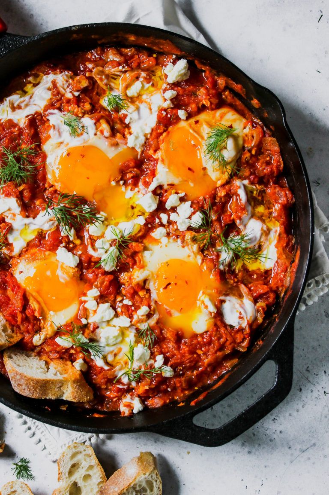

| |
 |
Shakshuka - the fast, very nutritious and easy to make breakfast |
Ingredients
- Olive oil - 1 tablespoon
- Onion - 1
- Bell pepper - 1
- Garlic - 3 cloves
- Zucchini / Eggplant - 1
- Mushrooms - 6
- Tomato sauce - 350g
|
- Salt
- Pepper
- Chilli flakes
- Oregano
- Basil
|
|
Steps
- Cut all the vegetables.
- Saute the onion, bell pepper, and garlic with a little bit of extra virgin olive oil.
- Once softened, add the mushrooms and zucchini/eggplant and continue stirring.
- Add the tomato sauce and the aromatics and let it simmer for about 5 minutes..
- When the sauce is ready, use the back of a spoon and make some holes in the sauce.
Crack your eggs and nestle each egg in one of the holes you created. Cover the skillet
and allow the eggs to simmer in the sauce over medium-low heat until the egg whites have settled.
Enjoy! |